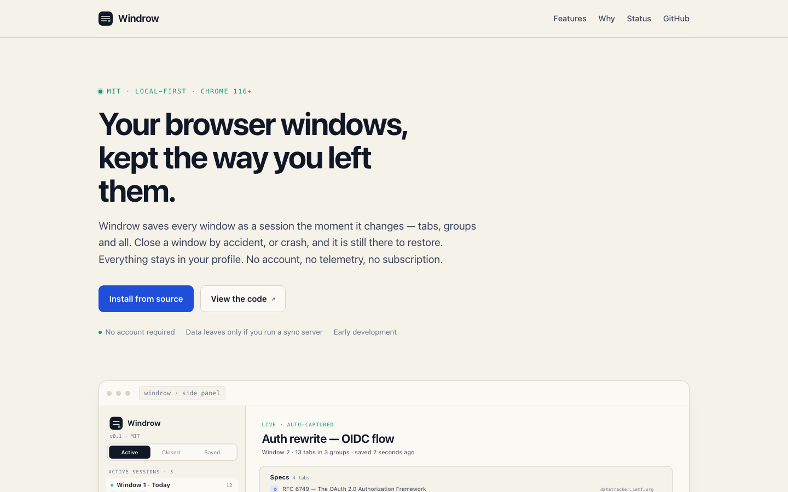
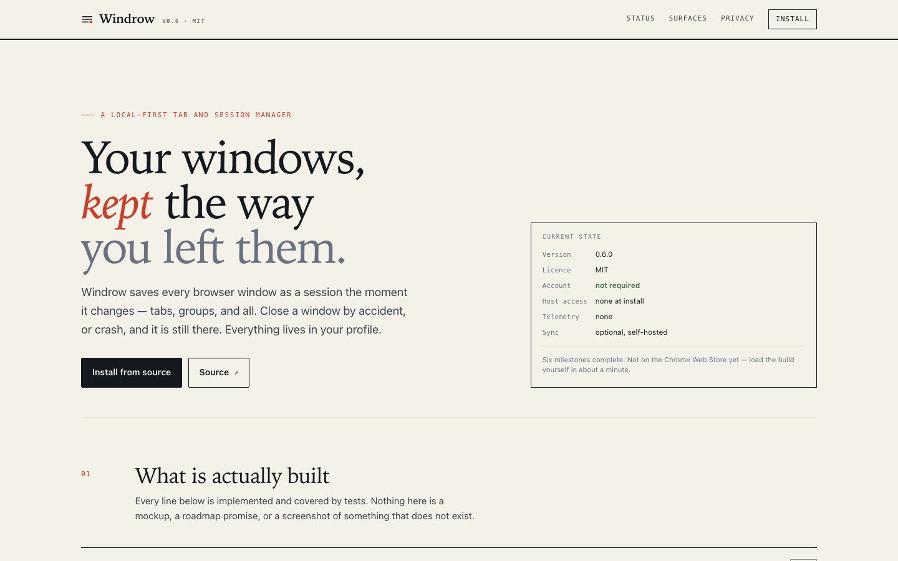

For approval · not deployed
A second direction for tabbary.dev, plus a status pack for a store submission. Nothing is live — the current site is untouched until you sign off.
The v1 site leaned warm and friendly. This one is ruled, high-contrast, and serif-led — closer to a technical journal than a SaaS landing page.
Every feature is listed as implemented, with the one unfinished item (store listing) called out. The layout has to carry evidence, not vibes.
Lives in the repo, excluded from the Pages workflow. Promoting it is a one-line change once approved.
Read this deck as a proposal. Three decisions at the end need your input; everything else is ready to ship as-is.
Before / after
Left is live today. Right is the proposal. The information is identical; the posture is not.


The v1 page is pleasant but reads as generic. The proposal borrows the structure of a technical ledger: numbered sections, hairline rules, a status column.
Direction
A restrained palette where colour is a signal, not decoration. Vermillion marks the thing to look at; moss marks "done".
Cream paper rather than white; ink rather than pure black. Vermillion only for the eyebrow, the active mark, and the rule under each slide.
Iowan/Palatino for headings, system sans for reading, mono for metadata and keycaps. All system fonts — no webfont requests, no layout shift.
Four sections, each with a number and a one-line claim. Rules do the grouping work instead of cards and shadows.
Colour transitions on hover only; everything else respects
prefers-reduced-motion. Nothing moves on scroll.
Section 1 · revised
The previous draft led with "windows". Tabbary is a tab manager: windows are an implementation detail of how Chrome groups them.
Decision taken: adopt ledger, drop the status card, ship sync in the listing.
This slide reflects the revised copy; the live site still shows the old text until you
promote design/v2.
Section 2
Eleven rows, each a capability, a one-line description, and a status tag. Ten read "done"; one reads "next".
A card grid invites vague claims. A ledger with a status column forces each row to state whether it exists. The single "next" row is the store listing, which is honest and also creates a reason to come back.
Version, test counts, and features come from the working tree: 0.6.0, 195 unit tests, 14 server tests, seven E2E suites. The numbers are verifiable by cloning.
Maintenance cost: this section has to be updated with each release. If that feels like a burden, we can reduce it to five rows and let the changelog carry detail.
Section 3
A single diagram shows the same session list as a popup, a side panel, and a full tab — the clearest argument for the product in one image.
The v1 site had a single large screenshot. This version shows the relationship between surfaces instead of one surface in isolation.
Section 4
Four claims, each one checkable in the manifest or the source. Then four numbers, because abstract promises are forgettable.
host
permissions
default
requests
whole
codebase
"No default requests" is the claim most worth checking: with sync off, the extension makes no network calls at all. That is asserted in the sync E2E.
Store pack
The code is feature-complete for 1.0. What remains is packaging, and three items need decisions only you can make.
Build, tests, icons at correct dimensions (art needed), onboarding, licence, privacy posture, and a working unpacked install path.
Name clearance, a support address, and whether sync ships as part of the listing or as a separate self-hosted add-on.
Decision needed
Answer these and I can promote the design, generate the store assets, and ship the listing.
Nothing is deployed. When you answer, promoting the site is moving design/v2
over site/ and pushing; the Pages workflow does the rest.